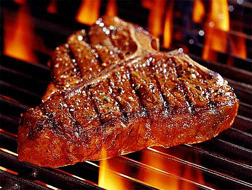

Step 4: Place steak onto grill, and cook until a dark, golden brown (not burnt) crust forms, 5 to 10 minutes depending on thickness of meat. Turn over, and continue cooking until golden on the other side, 5 to 10 minutes more. When finished, place steak onto a platter, and allow to rest for 10 minutes.
